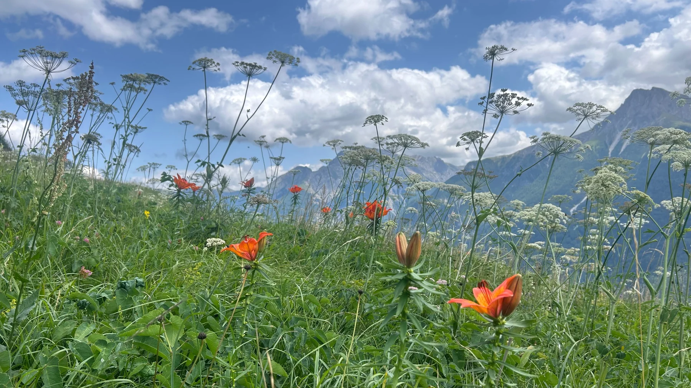
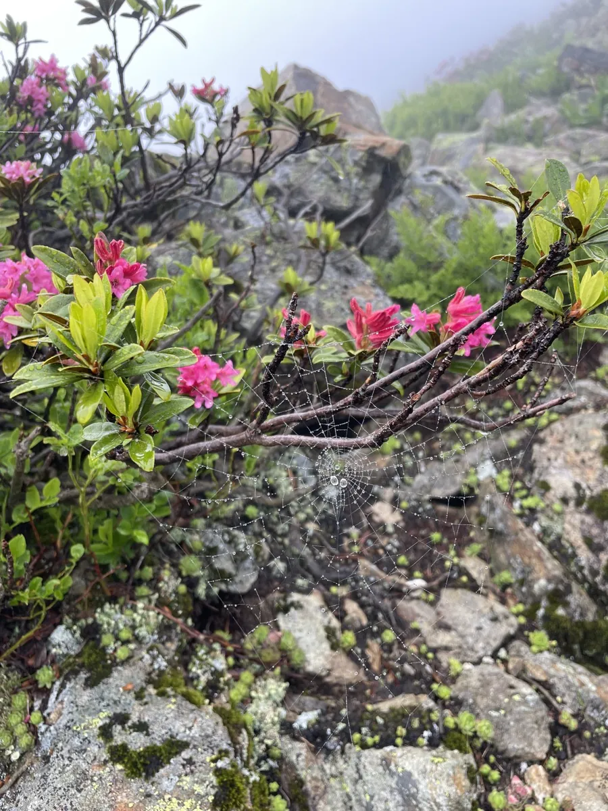
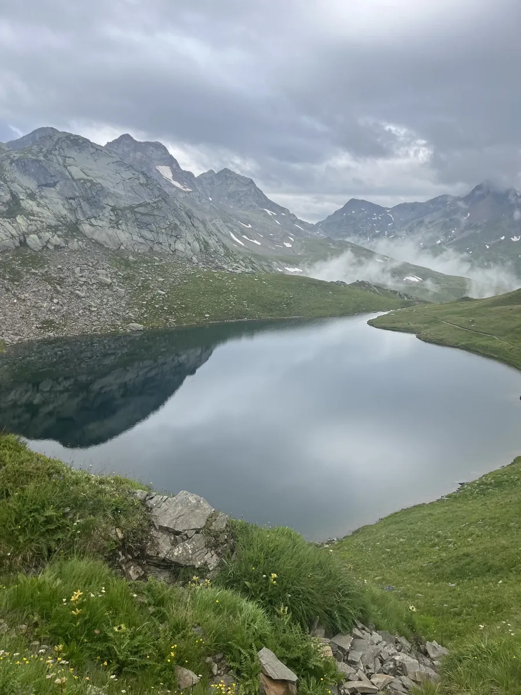
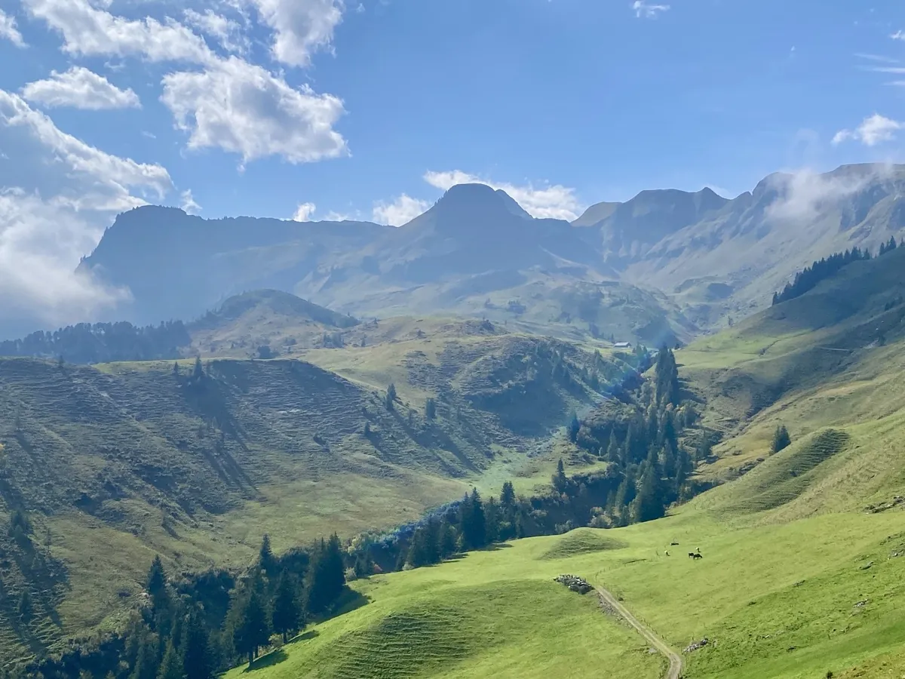

Mount Rigi
Kräuterhotel Edelweiss
The workshop takes place at Kräuterhotel Edelweiss on Mount Rigi, Switzerland. There is no road access: you cannot get a taxi to the hotel or drive directly there. Arrival is via the mountain railway and a short final approach, so please plan accordingly.

Workshop setting
A small, focused meeting
The three-day format is designed for intensive methodological discussion among a small expert group, combining prepared scientific inputs, plenary synthesis and breakout work.
Meals and informal scientific exchange are part of the programme, with a welcome apéro on Monday evening and joint dinners during the workshop.
Please arrange your own travel to Vitznau. For participants joining the coordinated group journey, the Vitznau–Rigi Staffelhöhe ticket will be purchased centrally, so that leg should not be booked separately.
Alpine perspectives


